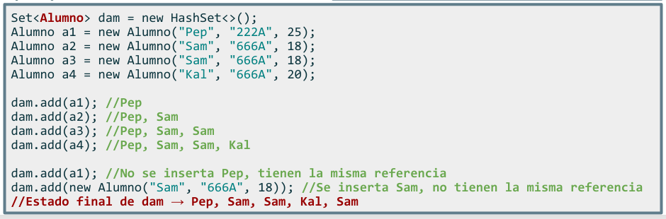
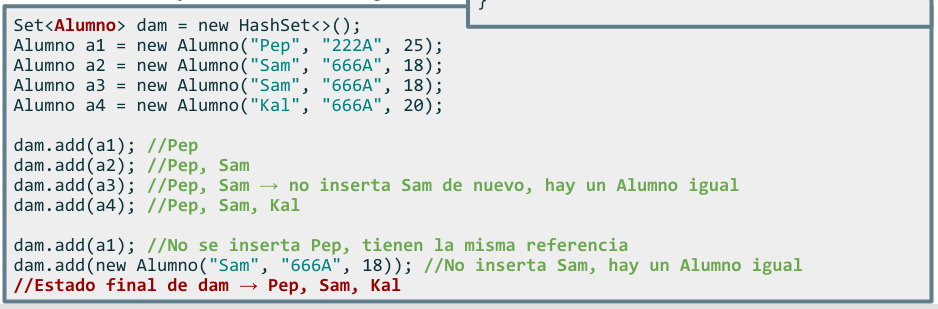

Como ya sabes, la clase Object es una superclase predeterminada de todas las clases. Es decir, todas las clases de Java directa o indirectamente heredan de la clase Object.
La clase Object define una serie de métodos que están disponibles en todas las clases en Java, por ejemplo, el famoso toString(). Pero en este punto hay dos métodos más que debemos conocer:
- hashCode(): se utiliza para obtener un valor numérico único que representa a un objeto. La función hash está diseñada para mapear la entrada de manera eficiente a un valor hash único y consistente. Esto lo hace especialmente útil en la búsqueda de datos y la optimización de rendimiento.
- equals(): se utiliza para comparar dos objetos y determinar si son iguales. Esta función es importante porque los objetos en Java se comparan por referencia, es decir, si dos objetos tienen la misma referencia (es decir, apuntan a la misma dirección de memoria), se consideran iguales.
Los métodos equals() y hashCode() son importantes porque permiten que los objetos se comparen y se indexen correctamente en las colecciones de Java. La implementación correcta de estos métodos es esencial para garantizar que las colecciones funcionen correctamente y produzcan resultados esperados.
Ejemplo de uso de equals() y hashCode() con HashSet
Si la clase Alumno no tuviera implementados los métodos equals() y hashCode(), se podrían insertar elementos duplicados (mismos valores de los atributos). Esto se debe a que, por defecto, los métodos equals() y hashCode() heredados de la clase Object están basados en las referencias de los objetos y no en su estado.

Para verificar la existencia de duplicados en un HashSet, primero se compara el resultado del método hashCode(). Si los hash son diferentes, se considera que los objetos son diferentes y no se verifica más. Sin embargo, si los hash son iguales, se procede a utilizar el método equals() para determinar si los objetos son realmente iguales.

Cuándo es necesario implementar equals() y hashCode()
- Si no sobreescribimos equals() y hashCode(), el comportamiento por defecto (heredado de Object) puede no funcionar correctamente si usamos objetos personalizados.
import java.util.HashSet;
class Persona {
String nombre;
public Persona(String nombre) {
this.nombre = nombre;
}
}
public class Main {
public static void main(String[] args) {
HashSet<Persona> set = new HashSet<>();
set.add(new Persona("Ana"));
set.add(new Persona("Ana")); // se espera que no se duplique, pero sí lo hará
System.out.println("Tamaño del conjunto: " + set.size()); // resultado: 2 (problema)
}
}
El problema: como equals() y hashCode() no están sobrescritos, los objetos new Persona("Ana") se consideran diferentes aunque el atributo nombre sea el mismo (por defecto, sólo se mira la referencia en memoria).
Sobrescribimos equals() y hashCode() en la clase Persona (siempre se hace igual):
import java.util.Objects;
import java.util.HashSet;
class Persona {
String nombre;
public Persona(String nombre) {
this.nombre = nombre;
}
@Override
public boolean equals(Object obj) {
if (this == obj) return true;
if (obj == null || getClass() != obj.getClass()) return false;
Persona persona = (Persona) obj;
return Objects.equals(nombre, persona.nombre);
}
@Override
public int hashCode() {
return Objects.hash(nombre);
}
}
public class Main {
public static void main(String[] args) {
HashSet<Persona> set = new HashSet<>();
set.add(new Persona("Ana"));
set.add(new Persona("Ana")); // ahora no se duplica
System.out.println("Tamaño del conjunto: " + set.size()); // resultado: 1
}
}
Ahora HashSet funciona correctamente y evita duplicados, ya que, además de la referencia en memoria, ahora el método Equals compara también el valor de los nombres: Objects.equals(nombre, persona.nombre).
- Si usamos tipos primitivos o clases estándar (String, Integer, etc.) NO es necesario. String y las clases de la API de Java ya implementan correctamente equals() y hashCode().
import java.util.HashSet;
public class EjemploTiposPrimitivos {
public static void main(String[] args) {
// HashSet con Strings
HashSet<String> nombres = new HashSet<>();
nombres.add("Juan");
nombres.add("Ana");
nombres.add("Pedro");
nombres.add("Juan"); // no se añadirá porque ya existe
System.out.println("Nombres en el HashSet: " + nombres);
System.out.println("¿Contiene 'Ana'?: " + nombres.contains("Ana")); // true
// HashSet con Integer
HashSet<Integer> numeros = new HashSet<>();
numeros.add(10);
numeros.add(20);
numeros.add(30);
numeros.add(10); // no se añadirá porque ya existe
System.out.println("Números en el HashSet: " + numeros);
System.out.println("¿Contiene 20?: " + numeros.contains(20)); // true
}
}
- Si sólo comparamos por referencia y no por contenido. Es decir, si usamos objetos sólo como identificadores únicos en memoria, no necesitaremos sobrescribir nada.
Persona p1 = new Persona("Carlos");
Persona p2 = p1; // ambas variables apuntan al mismo objeto en memoria
System.out.println(p1 == p2); // true